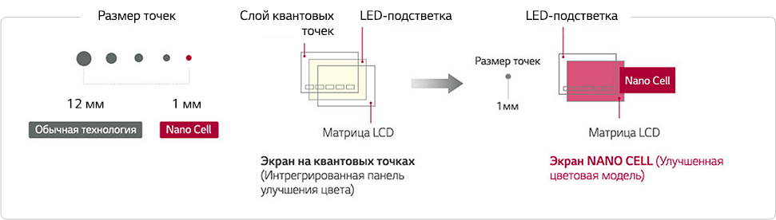
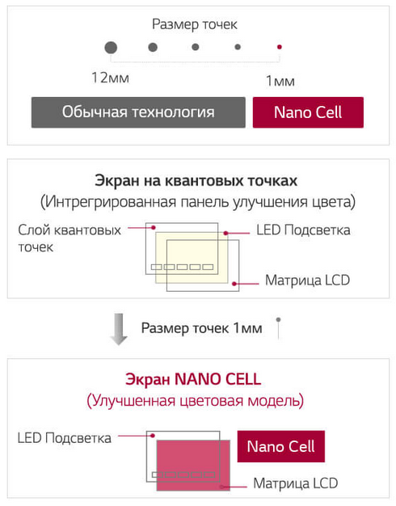
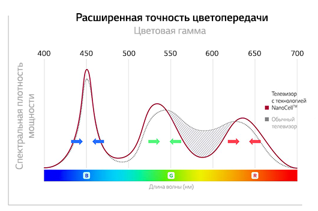

Как выбрать телевизор?
Как выбрать
телевизор?
Вы столкнулись с выбором нового телевизора, но обнаружили, что технологии
cильно продвинулись вперед. Чтобы помочь вам разобраться, мы собрали
на этой странице основные характеристики, на которые стоит обратить внимание
при выборе телевизора.
Вы столкнулись с выбором нового телевизора, но обнаружили, что технологии cильно продвинулись вперед. Чтобы помочь вам разобраться, мы собрали на этой странице основные характеристики, на которые стоит обратить внимание при выборе телевизора.
Тенденции и технологии 2018
Тенденции и технологии 2018

Искусственный интеллект
Tехнология распознавания речи, которой оснащен LG OLED TV с AI, облегчает
доступ к контенту и сервисам — теперь искать их стало намного проще. Телевизор
слушает ваш запрос и обдумывает ответ на него. Одна простая просьба —
и вы почувствуете себя в зале кинотеатра даже при просмотре телепередач.
Наслаждайтесь лучшим развлекательным контентом, используя возможности технологий «умного» дома.
Smart TV
«Умный» телевизор отличается от обычного тем, что с его помощью можно смотреть фильмы онлайн без участия компьютера, путешествовать по интернету, играть в игры. Кроме того он воспроизводит видеофайлы и музыку с флеш-карты. Более того, телевизоры Smart TV работают в паре со смартфонами: со смартфона можно воспроизвести видео и музыку, а также дистанционно управлять телевизором.
В телевизорах LG за функции Smart TV отвечает
webOS — прогрессивная операционная система с
интуитивно понятным интерфейсом, разобраться
в управлении которым не составит труда даже для
зрителя, далекого от современных информационных
технологий.
Пульт Magic Remote
Умному телевизору требуется умная система управления, и для LG Smart TV ее роль выполняет Magic Remote. Данное устройство может работать не только как обычный пульт дистанционного управления, но и как беспроводная трехмерная мышь.
Слегка перемещая Magic Remote в пространстве, можно управлять воспроизведением видеофайлов, навигацией в интернете или действиями в онлайновой игре. Кроме того, в Magic Remote встроен микрофон, позволяющий искать информацию в сети голосом.
Тип панели
Главный фактор, влияющий на качество передачи изображения — технология исполнения экранной панели. Существует два типа панелей: традиционные LED (жидкокристаллические матрицы со светодиодной подсветкой) и инновационные OLED (матрицы на основе органических светодиодов).
LED TV
Cтандартные жидкокристаллические панели, для подсветки которых применяются компактные светодиоды. LG традиционно использует технологию IPS LED — такие экраны отличаются образцовой цветопередачей и широкими углами обзора
OLED TV
Принципиально новая категория телевизоров, вершина развития телевизионных технологий. Каждый пиксель OLED — отдельный органический светодиод, который может светиться самостоятельно. За счет этого изображение обладает бесконечной контрастностью и точнейшей цветопередачей.
OLED передает более миллиарда оттенков — в 64 раза больше типичного LED, а беспрецедентная глубина черного достигается полным отключением отдельных незадействованных пикселей.
Угол обзора OLED шире, чем у LED, а толщина самих панелей — гораздо меньше: флагманские модели имеют толщину экрана менее 3 мм. Скорость обновления изображения на OLED-матрицах превосходит показатели LED в сотни раз, делая движущиеся изображения на них необыкновенно четкими.
Сравнение технологий Nano Cell и «квантовых точек» в современных LED панелях
 SUPER UHD 4K — премиальная линейка LED-телевизоров LG, отличающаяся от обычных ТВ изысканным дизайном и улучшенной подсветкой, расширяющей возможности этой классической технологии. Добавление в состав экрана дополнительных фильтрующих и поляризующих фильтров компенсирует недостатки традиционных LED-панелей, улучшая качество подсветки и точность цветопередачи; при этом сама ЖК-матрица остается неизменной.
В недалеком прошлом хорошей репутацией у ценителей качественного изображения пользовались плазменные панели, и, однако большое энергопотребление и невозможность дальнейшего увеличения четкости оставили данную технологию в прошлом.
Квантовые точки
В телевизорах LG SUPER UHD 2016 года применялась технология квантовых точек (Quantum Dots). Суть технологии в том, что между подсветкой и матрицей помещается специальный слой из кристаллов разного размера — «квантовых точек», который поглощает лишний спектр от подсветки и делает подсветку более ровной и качественной.
На смену квантовым точкам в самых современных SUPER UHD телевизорах LG 2017-го модельного года пришли наноячейки (Nano Cell). Слой из нано-частиц равного размера (около 1 нм), нанесенный поверх ЖК-панели, обеспечивает более реалистичную цветопередачу, чем квантовые точки, в том числе при просмотре сбоку под любым углом. Ячейки Nano Cell поглощают «излишки» световых волн, предотвращая искажения цветов, а также уменьшают световые блики на экране. Это позволяет сохранить высокое качество картинки даже в тех случаях, когда экран окружен множеством разных источников света.

Размеры
Прежде всего определитесь с подходящим размером. Оцените, с какого расстояния вы будете смотреть телевизор. Эксперты сходятся на том, что для современных телевизоров оптимальной дистанцией является 1.2–2.5 диагонали экрана. Расстояние в 1.2 диагонали будет соответствовать средним рядам в обычном кинотеатре, а 2.5 диагонали — задним рядам.
Таким образом, телевизоры диагональю до 35 дюймов лучше всего подойдут для кухни и небольшого кабинета, для спальни или детской оптимальный размер экрана 40 — 49 дюймов, ну а в гостиную для максимально комфортного просмотра лучше повесить панель размером не менее 55 дюймов.
Традиционно размер экрана выражается его диагональю в дюймах. Так, например, экран 43 дюйма имеет ширину и высоту в 96 и 54 см соответственно. Для удобного пересчета вы можете воспользоваться специальным конвертором, расположенным ниже.
Для телевизоров сверхвысокой четкости рекомендуем рассмотреть панели больших размеров. Большая диагональ позволит раскрыть потенциал такого телевизора и рассмотреть все мельчайшие детали.

до экрана
Таким образом, телевизоры диагональю до 35 дюймов лучше всего подойдут для кухни и небольшого кабинета, для спальни или детской оптимальный размер экрана 40 — 49 дюймов, ну а в гостиную для максимально комфортного просмотра лучше повесить панель размером не менее 55 дюймов.
Традиционно размер экрана выражается его диагональю в дюймах. Так, например, экран 43 дюйма имеет ширину и высоту в 96 и 54 см соответственно. Для удобного пересчета вы можете воспользоваться специальным конвертором, расположенным слева.
Для телевизоров сверхвысокой четкости рекомендуем рассмотреть панели больших размеров. Большая диагональ позволит раскрыть потенциал такого телевизора и рассмотреть все мельчайшие детали. рассмотреть все мельчайшие детали.
Разрешение
Разница между форматами HD, Full HD и стремительно набирающим популярность UHD 4K (ULTRA HD 4K) заключается в количестве точек (пикселей), составляющих изображение, и в их размере. Чем мельче и многочисленнее пиксели, тем качественнее картинка, поскольку на ней можно рассмотреть больше мелких деталей.
Стандарт 4К предусматривает самое высокое качество и четырехкратное увеличение количества элементов изображения в сравнении с Full HD. При этом даже изображение меньшего разрешения телевизоры 4К показывают лучше, чем модели Full HD и, тем более, HD, поскольку на их экране оно складывается из большего числа пикселей.
Чем мельче элементы на изображении, тем сильнее его нужно увеличить, чтобы рассмотреть во всех подробностях. Именно поэтому при переходе с телевизора Full HD на 4К рекомендуется выбирать экран большего размера.
Технология HDR
Технология HDR (High Dynamic Range) — новый стандарт видеосигнала, разработанный специально для современных UHD-телевизоров. Технически под HDR понимают формат видео, который содержит не только сверхвысокое разрешение, но и больше информации о яркости и цвете для каждого пикселя.
Для его поддержки нужно как специально снятое и обработанное видео, так и телевизоры нового поколения, оснащенные необходимыми возможностями. Это позволяет передать на экране куда более реалистичное изображение и снимает многие ограничения, в которые упирались обычные телевизоры. Среди очевидных преимуществ HDR следует назвать расширенный диапазон яркости и богатую палитру цветов, что в сумме дарит зрителю новые впечатления.
Телевизоры LG 2018 года с технологией Active HDR воспроизводят контент форматов HDR10 и HLG. А новейшие модели LG OLED и SUPER UHD поддерживают премиальный кинематографический формат Dolby Vision
Не стоит путать это с эффектом HDR в мире фотографии: если там из нескольких «обыкновенных» снимков с разной экспозицией создают один снимок с имитацией расширенного динамического диапазона, то в телевизорах обратная ситуация. Видеоматериал изначально снимается в специальном формате HDR, а потом это естественным образом позволяет добиться на выходе более реалистичного изображения.

Звук
Количество каналов звуковой системы телевизоров обозначается двумя цифрами: первая из них — число основных каналов, а вторая — сабвуферов. Маркировка «2.0» обозначает стандартные стереодинамики, а «5,2» указывает на наличие surround-системы с двумя сабвуферами. Такой телевизор способен без помощи внешних колонок и ресивера справляться с многоканальными дорожками фильмов, создавая объемный звук, как в кинотеатре. Флагманские модели телевизоров LG оснащены системой Dolby Atmos®, которая базируется не на каналах воспроизведения (динамиках), а на отдельных аудиообъектах, создавая по-настоящему объемное звучание. Звуковые дорожки при этом сводятся не звукорежиссером на студии, а чипом-декодером непосредственно в телевизоре.
Неважно, сколько динамиков имеется в аудиосистеме — звуковой процессор задействует их все, определяя в реальном времени, в какой колонке и с какой громкостью должен звучать конкретный объект, чтобы точнейшим образом воспроизвести его местоположение и движение в трехмерном пространстве, в том числе над головой зрителя. При добавлении новых колонок Dolby Atmos® самостоятельно адаптируется к новой конфигурации и заново откалибрует аудиосистему с учетом особенностей помещения.